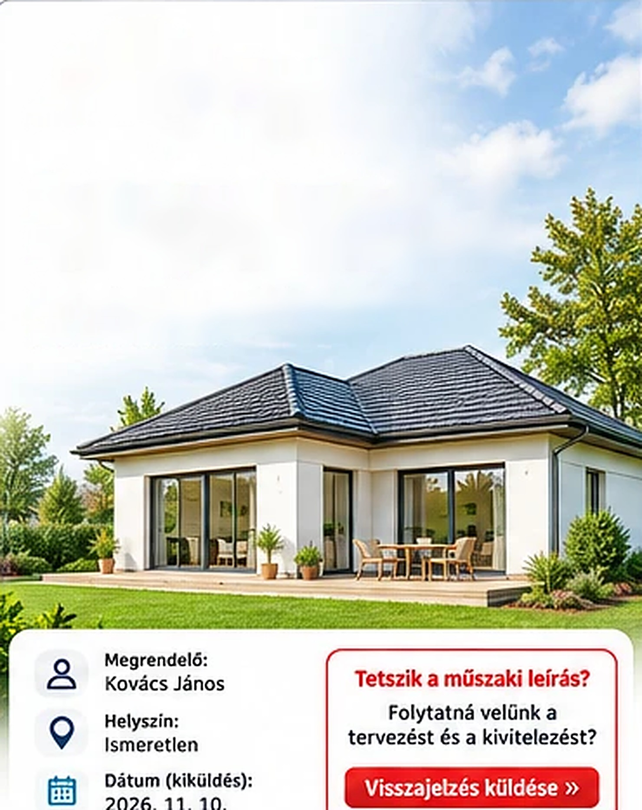
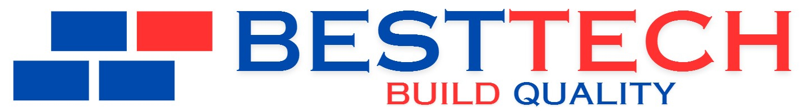
Építőipari generálkivitelezés
Épületszerkezeti és
Szakági műszaki leírás
Családi ház kivitelezésének részletes
műszaki tartalma
Dátum (kiküldés):
2026. 11. 10.
Tetszik a műszaki leírás?
Folytatná velünk a
tervezést és a kivitelezést?
Visszajelzés küldése »
Tartalomjegyzék
1.Épületszerkezeti műszaki leírás3
1.1Fogadószerkezet (alapozás)3
1.2Falazatok3
1.3Hőszigetelés és rétegrend4
1.4Koszorú4
1.5Belső aljzat (padlószerkezet)5
1.6Tetőszerkezet és tetőfedés5
2.Szakági műszaki leírás6
2.1Felületképzés, festés6
2.2Hideg- és melegburkolatok6
2.3Belsőépítészet, gipszkarton6
2.4Külső és belső nyílászárók, árnyékolók7
2.5Villanyszerelés7
2.6Víz és csatorna8
2.7Fűtésrendszer8
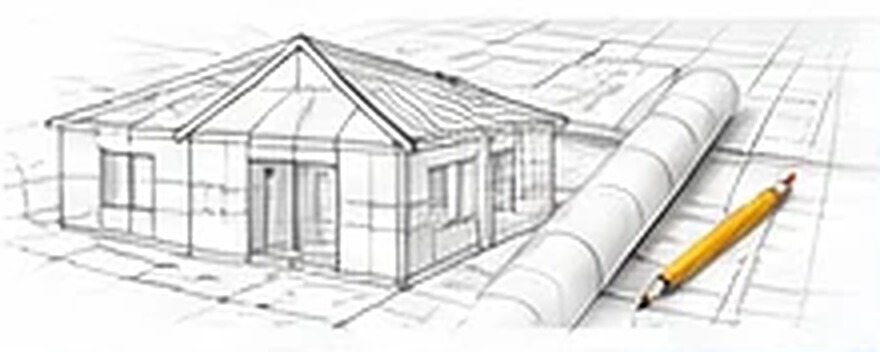
A műszaki leírás egy átfogó kivitelezési leírás, amely a Besttech által alkalmazott műszaki tartalmat mutatja be.
1. Épületszerkezeti műszaki leírás
1.1 Fogadószerkezet (alapozás)
- Építési alap: geodéziai kitűzés és földmunka.
- Sávalap: vasalt betonalap, 4–6 szál bordázott vasalattal (Ø12 mm) és kengyelezéssel (Ø8 mm) – jellemző méret: 30 × 30 cm.
- Lábazati fal: 30 cm-es zsalukő elemekből, függőleges és vízszintes vasalással, kitöltve C20/25-KK minőségű betonnal.
- Tömörített kavicságy.
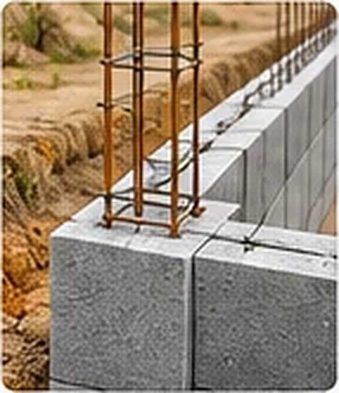
1.2 Falazatok
- Külső teherhordó fal: 30 cm vastag pórusbeton falazóelem – Porfix Viablock vagy Ytong.
- Belső teherhordó fal: 20–30 cm vastag pórusbeton falazóelem.
- Válaszfal: 10 cm vastag pórusbeton falazóelem.
- Áthidalók: a statikai terv szerint.
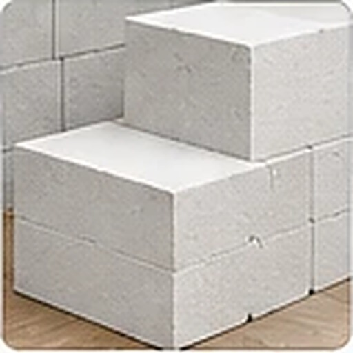
1.3 Hőszigetelés és rétegrend
Homlokzati hőszigetelés (kívülről):
- Ragasztóréteg
- EPS 80 homlokzati hőszigetelés, 15 cm
- Ragasztórétegbe ágyazott üvegszövet háló
- Alapozó
- Nemesvakolat (1,5–2 mm, dörzsölt szemcsés)
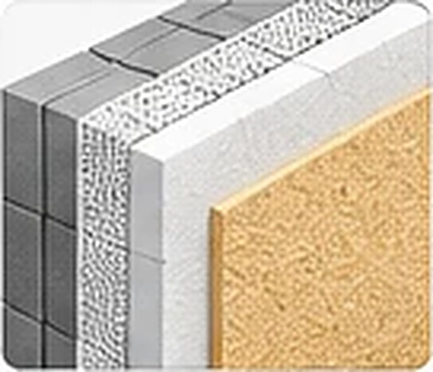
Falszerkezeti csomópont – lábazat:
- Lábazati hőszigetelés: XPS, 12 cm
- Vízszigetelés: GV35 talajnedvesség elleni szigetelőlemez
- Kavicságy, tömörített aljzat
- Visszatöltés, réteges tömörítéssel
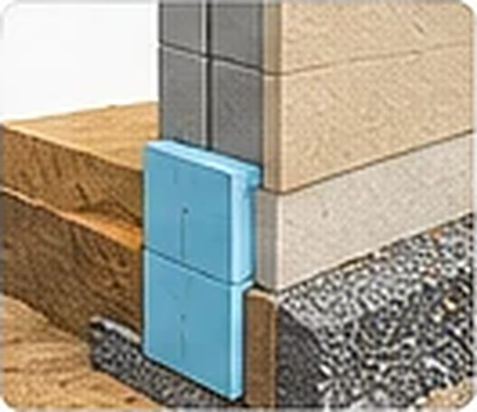
1.4 Koszorú
- Vasbeton koszorú, 4–6 szál Ø12 mm hosszirányú vasalattal
- Ø8 mm kengyelezéssel, 25 × 25 cm méretben
- C20/25-KK minőségű beton
- A koszorú külső oldalán 5 cm XPS hőszigetelés
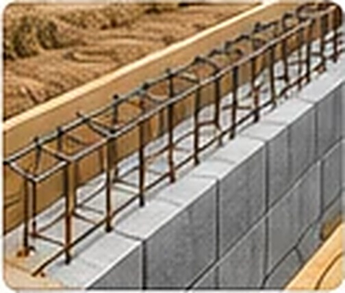
1.5 Belső aljzat (padlószerkezet)
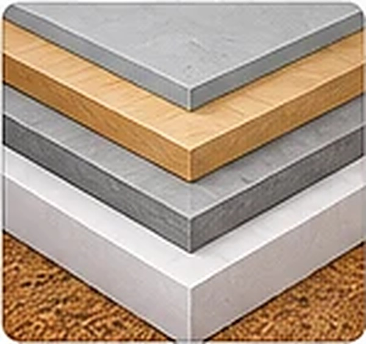
- Vasalt aljzatbeton: C20/16-KK, 15 cm
- Talajnedvesség elleni szigetelés: GV35
- Lépésálló hőszigetelés: EPS 100, 15 cm
- Technológiai fólia
- Esztrich aljzatbeton, 6 cm
- Végleges burkolat (laminált padló vagy hidegburkolat)
1.6 Tetőszerkezet és tetőfedés
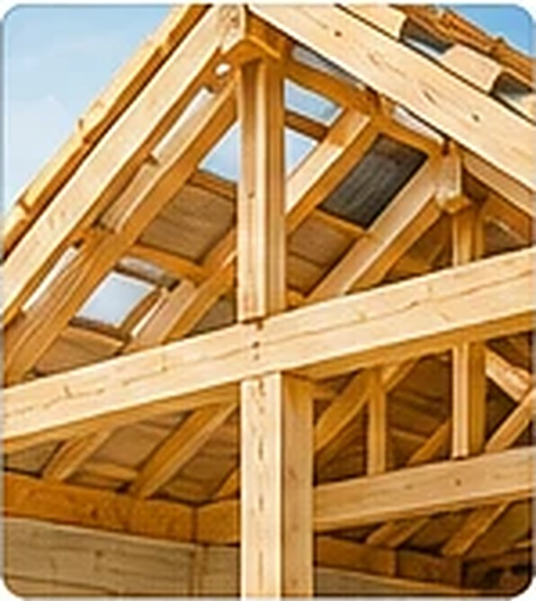
- Szeglemezes tetőszerkezet (rovarvédő szerrel kezelt fűrészáru)
- Alternatívaként hagyományos, ácsolt tetőszerkezet
- Tetőszerkezeti kötőelemek, fogópárok
- Tetőfedés: Tondach kerámiacserép vagy betoncserép (téglavörös, barna vagy antracit színben)
- Alátéthéjazat: páraáteresztő tetőfólia
- Tetőlécezés és ellenlécezés (min. 5 cm)
- Ereszcsatorna és lefolyócsövek: RS rendszer
2. Szakági műszaki leírás
2.1 Felületképzés, festés
- Főfalak és válaszfalak glettelése, csiszolása
- Két réteg fehér diszperziós festék
- Higiénikus, mosható
- Élek alumínium élvédővel
2.2 Hideg- és melegburkolatok
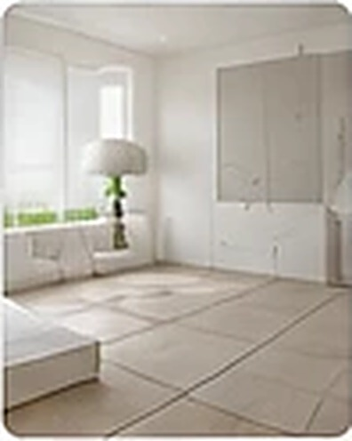
- Laminált padló, padlófűtésre alkalmas alátéttel (≥ 3500 Ft/m² kategória)
- Nappali, étkező, közlekedő, kamra, konyha: ≤ 7 cm-es lábazattal, hidegburkolat (≥ 5500 Ft/m² kategória)
- Fürdőszobai falburkolat: 210–220 cm magasságig (megrendelői igény szerint teljes falmagasságig), ≥ 5500 Ft/m²
- WC falburkolata: 120 cm magasságig
- Konyhapult feletti burkolat: max. 2 m²
- 60 × 60 cm burkolólap és korszerű ragasztástechnológia
2.3 Belsőépítészet, gipszkarton
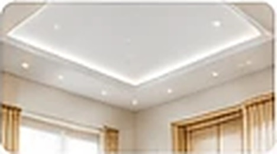
- Fém vázszerkezetes gipszkarton álmennyezet
- Vizes helyiségekben impregnált gipszkarton
- Q3 minőségű glettelés
- Fali csatlakozások akril tömítéssel
2.4 Külső és belső nyílászárók, árnyékolók
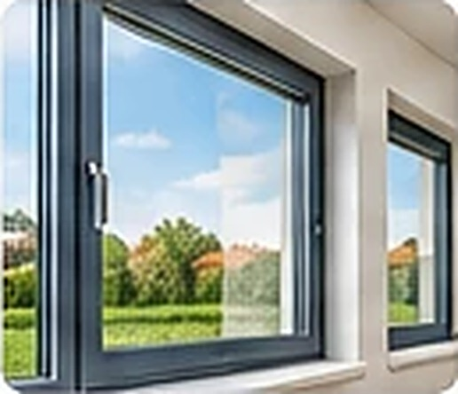
- Külső nyílászárók: Salamander bluEvolution 82 profil, 3 rétegű üvegezés (Uw ≈ 0,82 W/m²K)
- Belső ajtók: CPL felületű, Borovi gyártmány (F1, F2, F3 típusok)
- Redőnyök: motoros működtetéssel
- Árnyékolók: igény szerint zsalúzia vagy roló, valamint szúnyogháló
2.5 Villanyszerelés
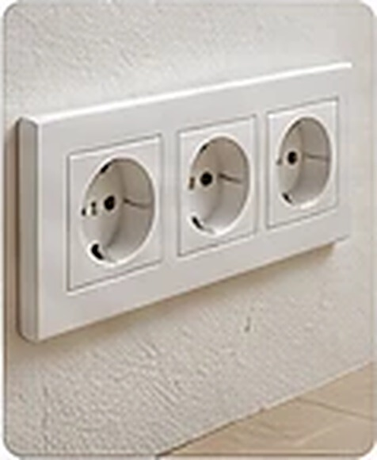
- Teljes hálózat a szabványok szerint
- Szobánként: 1 db kapcsoló, 8 db dugalj, 3 db TV/NET kiállás, 1 db termosztát
- Konyha: sütő, főzőlap, hűtő, elszívó, mikró, mosogatógép kiállása
- Fürdő: helyi lámpa, tükörvilágítás, dugalj
- Kültéri világítás: 3 db lámpa, 3 db dugalj
- Internetes kiállás: UTP Cat 5e
2.6 Víz és csatorna
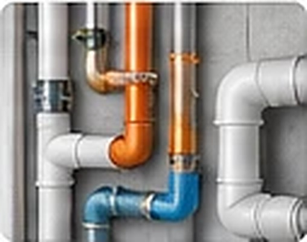
- Főgerinc: 110–125 KG cső
- Teljes szennyvízhálózat a szabvány szerint
- Vízhálózat: többrétegű cső, hőszigetelve
- HMV-keringető szivattyú: opcionálisan választható
- Vízbetáplálás: 200 l-es hőszivattyús tartály előkészítéssel
- Szerelvények: WC, mosdó, csaptelepek (értékhatárok a műszaki leírás szerint)
2.7 Fűtésrendszer
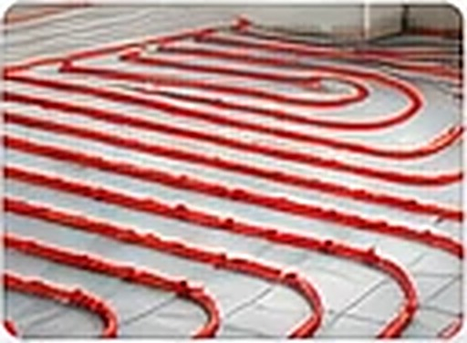
- Hőszivattyús fűtésrendszer HMV-előállítással
- ORION PRO LINE HP 8 kW-1F, vagy műszakilag vele megegyező berendezés
- Oxigéndiffúzió-mentes padlófűtéscsövek
- Helyiségenkénti termosztátos szabályozás
- Évenkénti karbantartás: igény szerint
Szeretné, ha elkészítenénk az Ön házának
személyre szabott ajánlatát?
Kérem a folytatást »